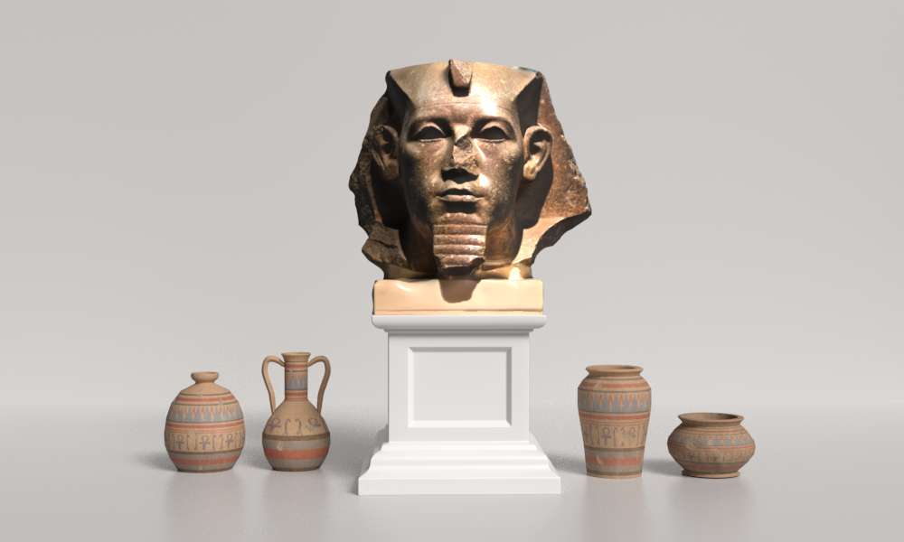

Step Into
The Kingdom of Ancient Egypt
Welcome to our virtual museum, where the past comes to life through cutting-edge technology and immersive storytelling. Explore the fascinating legacies of four iconic Egyptian kings — Khafre, Amenemhat III, Ramesses II, and Ramesses III — brought to you in stunning 3D detail.
Each model offers a window into the grandeur of ancient Egypt, showcasing the artistry, power, and influence of these legendary pharaohs. With interactive 3D displays, you can examine intricate details, learn about their history, and uncover the stories behind their reigns.
Whether you’re a history enthusiast, a student, or simply curious, this website invites you to embark on a journey through time and experience the wonders of Egypt like never before.
Museum Podcast EP#1: The History of Ancient Egypt Kings
Dynasties of Egypt
Middle Kingdom
(ca. 2055-1650 BC)Amenemhat III
(ca. 1860-1814 BCE, 12th Dynasty)New Kingdom
(ca. 1550-1069 BC)

Artifacts of Egyptian Kingdom
Seated Statue of Khafre
(ca. 2613–2498 BCE, 4th Dynasty)
Khafre, a prominent pharaoh of Egypt’s 4th Dynasty during the Old Kingdom (circa 2570 BC), is renowned for his lasting contributions to the Giza Plateau, including the second-largest pyramid and the iconic Great Sphinx, believed to bear his likeness. His reign symbolizes the architectural and cultural advancements of ancient Egypt’s pyramid age, as seen in artifacts like the seated diorite statue. The statue emphasizes Khafre’s divine authority and enduring legacy, with a falcon at the back of his head symbolizing protection by the god Horus. The use of diorite underscores its symbolic significance of eternal strength, while the throne’s intricate carvings, including the Sema Tawy symbol of lotus and papyrus plants, represent the unification of Upper and Lower Egypt.
About the model
- Dimensions: Approximately 1.68 meters tall (~5.5 feet)
- Provenance: Discovered in the Valley Temple of Khafre, Giza Plateau.
- Material: Diorite (a durable and prestigious stone symbolizing permanence).
- Current Location: Egyptian Museum, Cairo.
- Notes: This iconic statue portrays Khafre seated on a throne with the falcon god Horus protecting him from behind. The craftsmanship reflects the artistry and divine symbolism of the Old Kingdom.
Granite Head of Amenemhat III
(ca. 1991-1803 BCE, 12th Dynasty)

Amenemhat III was a pharaoh of the 12th Dynasty who ruled Egypt from 1860 to 1814 BC. A granite head from a colossal statue of the king wearing the nemes headdress and uraeus was found in the Temple of Bastet at Bubastis. The prominent ears of the Granite Head of Amenemhat III, which symbolize the pharaoh’s attentiveness to his people. Also, Amenemhat III is known for his ambitious building projects, including his pyramid complex in general and the development of the Fayum Oasis. His reign is considered a golden age of the Middle Kingdom.
About the model
- Dimensions: Fragment; the original colossal statue is estimated to have been over 4 meters tall (~6.5 feet).
- Provenance: Found in the Temple of Bastet at Bubastis.
- Material: Granite.
- Current Location: British Museum, London.
- Notes: This head features the nemes headdress and uraeus, emphasizing Amenemhat III’s royal authority. His statues are celebrated for their realism, reflecting the artistic tendencies of the Middle Kingdom.
Colossal Statue of Ramesses II
(ca. 1292-1189 BCE, 19th Dynasty)
Ramesses II, famously known as Ramesses the Great, reigned as pharaoh during Egypt’s 19th Dynasty from 1279 to 1213 BCE. Celebrated for his exceptional military prowess and diplomatic acumen, he fortified Egypt’s borders and secured its influence through decisive campaigns and alliances. Among his notable achievements was the signing of the historic peace treaty with the Hittites, one of the earliest recorded treaties in history.
Symbolizing his divine authority and role as the unifier of Egypt, Ramesses II often adorned the double crown , representing the unification of Upper and Lower Egypt, and the iconic false beard , signifying his connection to the gods. His reign marked an era of prosperity, innovation, and a lasting legacy in Egypt’s illustrious New Kingdom.
About the model
- Dimensions: Approximately 11 meters tall (~36 feet).
- Provenance: Originally stood at the Great Temple of Ptah in Memphis.
- Material: Red granite.
- Current Location: Grand Egyptian Museum (Giza). Previously displayed in Ramses Square, Cairo.
- Notes: This towering statue exemplifies Ramesses II’s grandeur and is one of the many colossal representations of him found throughout Egypt. Its relocation highlights its significance as a cultural artifact.
Standing Statue of Ramesses III
(ca. 1189-1069 BCE, 20th Dynasty)
amesses III, a prominent pharaoh of Egypt’s 20th Dynasty, ruled from 1186 to 1155 BCE. He is renowned for his decisive victories over the Sea Peoples, a nomadic confederation whose invasions threatened the stability of ancient civilizations. Through his military prowess, Ramesses III safeguarded Egypt during a time of significant upheaval, preserving its territorial integrity and cultural heritage.
Symbolizing divine protection and sovereignty, the Uraeus—a rearing cobra—adorned his headdress , affirming his role as the chosen ruler of the gods. Additionally, the traditional pleated kilt worn by the pharaoh was often inscribed with symbols of kingship, underscoring his authority and connection to Egypt’s enduring traditions. Despite challenges in the later years of his rule, Ramesses III is remembered as Egypt’s last great pharaoh, embodying the resilience and grandeur of the New Kingdom.
About the model
- Dimensions: Approximately 3 meters tall (~10 feet).
- Provenance: Medinet Habu (mortuary temple).
- Material: Sandstone.
- Current Location: Luxor Museum, Luxor.
- Notes: This statue depicts Ramesses III in a traditional standing pose, emphasizing his role as a warrior and protector. It is part of the impressive collection of artifacts from his mortuary temple, which is richly adorned with inscriptions and reliefs.